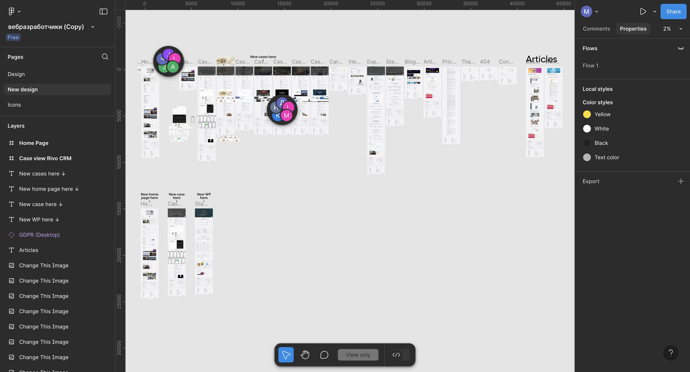
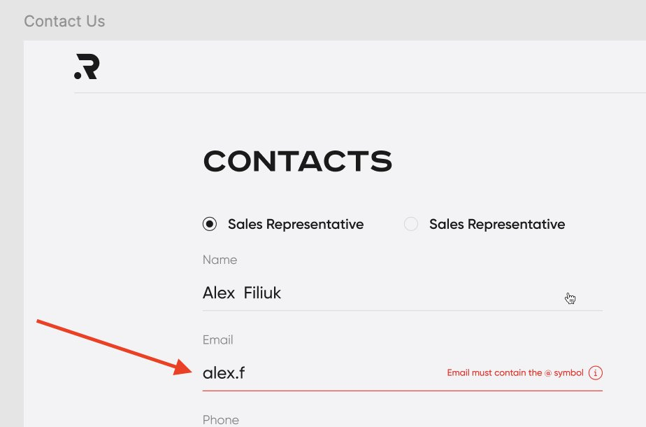
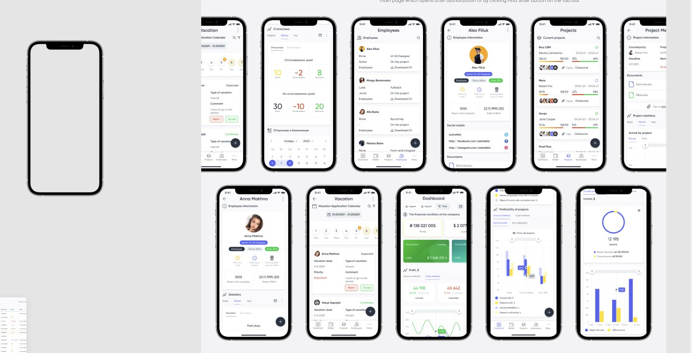
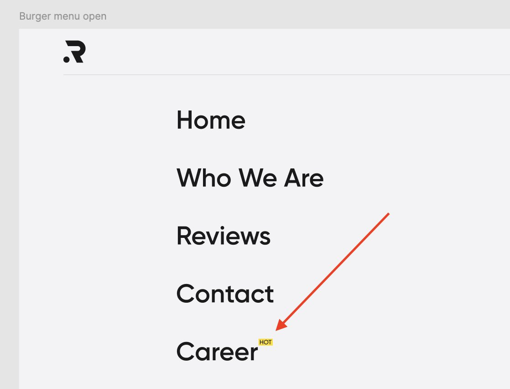

Figma — самый распространённый инструмент для дизайнеров, в котором создаются макеты будущих сайтов. Фронтенд-разработчики собирают сайт по этим макетам.
🎯 Figma для тестировщика
QA в Figma
После того как фронтендер закодил макет и передал в тестирование, тестеру необходимо сверить макет с итоговым UI: проверить UI-kit, сверить отступы (margin) между элементами, проверить адаптацию верстки при изменении разрешения.
💡
PerfectPixel
В тестировании UI популярно расширение PerfectPixel — позволяет быстро наслоить макет дизайна на текущую веб-реализацию и визуально увидеть баги.
🖼️ Пример Figma на проекте

Пример реального проекта в Figma — страницы (Pages), слои (Layers), макеты
Перейди в Pages и посмотри как отличаются старая версия дизайна (Design) и новая актуальная (New design)
Посмотри макеты на самой странице
Потыкай Layers и посмотри из чего они состоят
Задания:
1
Вытащи hex-код красного цвета валидации поля Email с формы Contacts Подсказка: Pages → New design → Layers → Contact Us → форма CONTACTS → инпут Email → цвет в формате #000000
2
Вытащи модель iPhone, которая используется в мокапах Подсказка: слой «Case view Rivo CRM» → провалиться в слой
3
Вытащи название и размер шрифта из стикера «HOT» над надписью Career (слой «Burger menu open»)
4
Проверь одинаковые ли жёлтые цвета в том же слое. Напиши hex этих цветов
5
Выясни каким образом сделано затемнение изображений. Напиши hex и значение прозрачности
Примеры из заданий:

Задание 1 — красный цвет валидации поля Email

Задание 2 — мокапы iPhone в слое Case view Rivo CRM

Задание 3 — слой Burger menu open, стикер HOT над Career